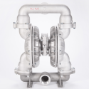
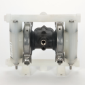
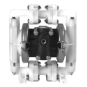
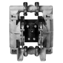
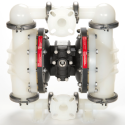

Diaphragm Pumps
Harrington proudly offers a wide selection of premium diaphragm pumps, designed to suit various applications. Our diaphragm pumps come in various configurations based on suction lift, flow rates and temperature. Choose your product today to request a quote, learn more, and explore our purchasing options.
 All-Flo A300-FA3-VV3V-B80 Bolted Air-Operated Double-Diaphragm Pump, 3 inch ANSI/DIN Flange, Stainless Steel body, FKM Diaphragm Standard Configurationper EA · Sign in for price
All-Flo A300-FA3-VV3V-B80 Bolted Air-Operated Double-Diaphragm Pump, 3 inch ANSI/DIN Flange, Stainless Steel body, FKM Diaphragm Standard Configurationper EA · Sign in for price
All-Flo A300-NAA-GGNN-B30 Bolted Air-Operated Double-Diaphragm Pump, 3 inch NPT, Aluminum body, Geolast® Diaphragm Standard Configurationper EA · Sign in for price- All-Flo A300-NAA-GTNN-B30 Bolted Air-Operated Double-Diaphragm Pump, 3 inch NPT, Aluminum body, PTFE Diaphragm Standard Configurationper EA · Sign in for price
- All-Flo A300-NAA-SSEE-B30 Bolted Air-Operated Double-Diaphragm Pump, 3 inch NPT, Aluminum body, Santoprene® Diaphragm Standard Configurationper EA · Sign in for price
- All-Flo A300-NAA-TTYT-B30 Bolted Air-Operated Double-Diaphragm Pump, 3 inch NPT, Aluminum body, PTFE Diaphragm Standard Configurationper EA · Sign in for price
- All-Flo A300-NAA-VVVV-B30 Bolted Air-Operated Double-Diaphragm Pump, 3 inch NPT, Aluminum body, FKM Diaphragm Standard Configurationper EA · Sign in for price

All-Flo C038-SQK-SSKE-S70 Clamped Air-Operated Double-Diaphragm Pump, 3/8 inch NPT, PVDF body, Santoprene® Diaphragm Standard Configurationper EA · Sign in for price- All-Flo C038-SQK-TVKV-S70 Clamped Air-Operated Double-Diaphragm Pump, 3/8 inch NPT, PVDF body, FKM Diaphragm Standard Configurationper EA · Sign in for price
- All-Flo C038-SQP-GGPN-S70 Clamped Air-Operated Double-Diaphragm Pump, 3/8 inch NPT, Polypropylene body, Geolast® Diaphragm Standard Configurationper EA · Sign in for price
- All-Flo C038-SQP-SSPE-S70 Clamped Air-Operated Double-Diaphragm Pump, 3/8 inch NPT, Polypropylene body, Santoprene® Diaphragm Standard Configurationper EA · Sign in for price
- All-Flo C038-SQP-TTPT-N70 Clamped Air-Operated Double-Diaphragm Pump, 3/8 inch NPT, Polypropylene body, PTFE Diaphragm Standard Configurationper EA · Sign in for price
- All-Flo C038-SQP-TTPT-S70 Clamped Air-Operated Double-Diaphragm Pump, 3/8 inch NPT, Polypropylene body, PTFE Diaphragm Standard Configurationper EA · Sign in for price
- All-Flo C038-SQP-TVPV-S70 Clamped Air-Operated Double-Diaphragm Pump, 3/8 inch NPT, Polypropylene body, FKM Diaphragm Standard Configurationper EA · Sign in for price
- All-Flo C038-SQY-GG3N-SF0 Clamped Air-Operated Double-Diaphragm Pump, 3/8 inch NPT, Conductive Nylon body, Geolast® Diaphragm Standard Configurationper EA · Sign in for price
- All-Flo C038-SQY-TT3T-SF0 Clamped Air-Operated Double-Diaphragm Pump, 3/8 inch NPT, Conductive Nylon body, PTFE Diaphragm Standard Configurationper EA · Sign in for price
- All-Flo C038-SQY-TV3V-SF0 Clamped Air-Operated Double-Diaphragm Pump, 3/8 inch NPT, Conductive Nylon body, FKM Diaphragm Standard Configurationper EA · Sign in for price

All-Flo C050-SPK-SSKE-G70 Clamped Air-Operated Double-Diaphragm Pump, 1/2 inch NPT, PVDF body, Santoprene® Diaphragm Standard Configurationper EA · Sign in for price- All-Flo C050-SPP-GGPN-G70 Clamped Air-Operated Double-Diaphragm Pump, 1/2 inch NPT, Polypropylene body, Geolast® Diaphragm Standard Configurationper EA · Sign in for price
- All-Flo C050-SPP-SSPE-G70 Clamped Air-Operated Double-Diaphragm Pump, 1/2 inch NPT, Polypropylene body, Santoprene® Diaphragm Standard Configurationper EA · Sign in for price
- All-Flo C050-SPP-TTPT-G70 Clamped Air-Operated Double-Diaphragm Pump, 1/2 inch NPT, Polypropylene body, PTFE Diaphragm Standard Configurationper EA · Sign in for price

All-Flo C100-NPK-SSKE-G70 Clamped Air-Operated Double-Diaphragm Pump, 1 inch NPT, PVDF body, Santoprene® Diaphragm Standard Configurationper EA · Sign in for price- All-Flo C100-NPP-SSPE-G70 Clamped Air-Operated Double-Diaphragm Pump, 1 inch NPT, Polypropylene body, Santoprene® Diaphragm Standard Configurationper EA · Sign in for price
- All-Flo C100-NPP-SSPE-L70 Clamped Air-Operated Double-Diaphragm Pump, 1 inch NPT, Polypropylene body, Santoprene® Diaphragm Standard Configurationper EA · Sign in for price
- All-Flo C100-NPP-TTPT-G70 Clamped Air-Operated Double-Diaphragm Pump, 1 inch NPT, Polypropylene body, PTFE Diaphragm Standard Configurationper EA · Sign in for price
- All-Flo C100-NPP-TTPT-L70 Clamped Air-Operated Double-Diaphragm Pump, 1 inch NPT, Polypropylene body, PTFE Diaphragm Standard Configurationper EA · Sign in for price
- All-Flo C100-NPP-VVPV-G70 Clamped Air-Operated Double-Diaphragm Pump, 1 inch NPT, Polypropylene body, FKM Diaphragm Standard Configurationper EA · Sign in for price

All-Flo C150-FPK-SSKE-B70 Clamped Air-Operated Double-Diaphragm, 1-1/2 inch ANSI/DIN Flange, PVDF body, Santoprene® Diaphragm Standard Configurationper EA · Sign in for price- All-Flo C150-FPP-GGPN-B70 Clamped Air-Operated Double-Diaphragm, 1-1/2 inch ANSI/DIN Flange, Polypropylene body, Geolast® Diaphragm Standard Configurationper EA · Sign in for price
- All-Flo C150-FPP-SSPE-B70 Clamped Air-Operated Double-Diaphragm, 1-1/2 inch ANSI/DIN Flange, Polypropylene body, Santoprene® Diaphragm Standard Configurationper EA · Sign in for price
- All-Flo C150-FPP-TTPT-B70 Clamped Air-Operated Double-Diaphragm, 1-1/2 inch ANSI/DIN Flange, Polypropylene body, PTFE Diaphragm Standard Configurationper EA · Sign in for price
- All-Flo C150-FPP-VVPV-B70 Clamped Air-Operated Double-Diaphragm, 1-1/2 inch ANSI/DIN Flange, Polypropylene body, FKM Diaphragm Standard Configurationper EA · Sign in for price
 Graco Fluid Repair Kit for Husky Series 205 D11021 and D21021 Air Operated Double Diaphragm Pumps, PTFE Diaphragmper EA · Sign in for price
Graco Fluid Repair Kit for Husky Series 205 D11021 and D21021 Air Operated Double Diaphragm Pumps, PTFE Diaphragmper EA · Sign in for price- Graco Fluid Repair Kit for Husky Series 205 D11026 and D21026 Air Operated Double Diaphragm Pumps, Santoprene™ Diaphragmper EA · Sign in for price
 Graco Fluid Repair Kit for Husky Series 205 D12091 and D22091 Air Operated Double Diaphragm Pumps, PTFE Diaphragmper EA · Sign in for price
Graco Fluid Repair Kit for Husky Series 205 D12091 and D22091 Air Operated Double Diaphragm Pumps, PTFE Diaphragmper EA · Sign in for price- Graco Fluid Repair Kit for Husky Series 205 D12096 and D22096 Air Operated Double Diaphragm Pumps, Santoprene™ Diaphragmper EA · Sign in for price
 Graco Fluid Repair Kit for Husky Series 205 D150A1 and D250A1 Air Operated Double Diaphragm Pumps, PTFE Diaphragmper EA · Sign in for price
Graco Fluid Repair Kit for Husky Series 205 D150A1 and D250A1 Air Operated Double Diaphragm Pumps, PTFE Diaphragmper EA · Sign in for price- Graco Fluid Repair Kit for Husky Series 205 D150A6 and D250A6 Air Operated Double Diaphragm Pumps, Santoprene™ Diaphragmper EA · Sign in for price
 Graco Fluid Repair Kit for Husky Series 307 D31211, D32211, D3A211, and D3B211 Air Operated Double Diaphragm Pumps, PTFE Ball and Diaphragmper EA · Sign in for price
Graco Fluid Repair Kit for Husky Series 307 D31211, D32211, D3A211, and D3B211 Air Operated Double Diaphragm Pumps, PTFE Ball and Diaphragmper EA · Sign in for price- Graco Fluid Repair Kit for Husky Series 307 D31255, D32255, D3A255, and D3B255 Air Operated Double Diaphragm Pumps, TPE Ball and Diaphragmper EA · Sign in for price
- Graco Fluid Repair Kit for Husky Series 307 D31277, D32277, D3A277, and D3B277 Air Operated Double Diaphragm Pumps, Buna Ball and Diaphragmper EA · Sign in for price